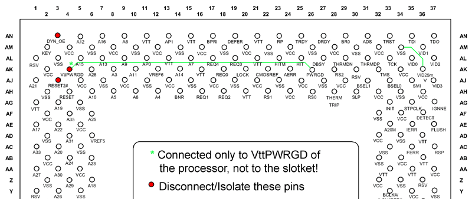

To boldly go where tons of people have been dozens of times, but never stuck around long enough to notice the painfully obvious...
Quote of the millenium: "When The Going Gets Strange, The Weird Turn Pro", Doug Winger 2003
Latest quest
Make a Tualatin processor (Celeron 1200) work on an 440BX motherboard using just sticky-tape :)
Some time ago I read about the tualatin processors (the "p4"-celeron series) having special "features"
to prevent them from working older motherboards, there are some solutions for sale to disable this "feature", for instance:
Powerleap http://www.powerleap.com/ (costs: about 160 euros including a 1.4 Ghz tualatin processor)
But most of them are to expensive (in my opinion) and none of them where available anywhere nearby (here in the netherlands).
There are also
simpler slot-370 pin converters
out there for as low as 6-10 euro, but I've not been able to find an online-shop that sells them.
Also fitting these on top of a slot-converter and fitting a fan on top of that can be a hassle.
So browsing the web I found the next best thing... how to do it yourself, using just common sense and some sticky tape.
There are some webpages about this topic already and none of what I describe here is of my own invention,
all I did was collect the information and use it in my own way. Here are some of the links I found, be aware that
some of them are not in english (or badly so).
Tualatinmod.de.vu http://www.tualatinmod.de.vu/
Andrea's site http://digilander.libero.it/grandecigno/
Overclockers.com http://www.overclockers.com/tips965/
The lunchbox (very nice) http://www.geocities.com/_lunchbox/
Martin's Inofficial Home Page http://www.froggy.com.au/frogge/pepper/
Overclockers.pl http://www.overclockers.pl/artykuly/tualatin_mod/
So here's what I did, I started out with a ABIT BE6-II v1.1 motherboard, I bought this board a few years ago because it
had an onboard HTP370 RAID controller and softmenu-III bios. So FSB and io/core voltage can be adjusted and monitored in the bios.
Also the core temperature can be monitored from the bios and alarm can be set to warn in case of overheating.
My current cpu was a P-III 866 Mhz and since I bought a Celeron 1200, my ultimate goal was to overclock it as high as
possible because without that I would "only" gain 334 Mhz :) which was barely +39% faster.
The quest for the right Slotket
The first thing I needed was a Compatible Slotket (= Slot1/Slot370 converter), which means, one that's designed to
support P-III processors (or above). The first slotket I tried was an old slotket I still had from my Celeron 600 days.
This was a "Asus-S370-D rev.1.00", this didn't work ofcourse because this slotket was never intended to support a P-III (or higher)
just for P2-Celeron's.
There is actually a mod to even use this kind of slotket, a detailed document about this can be found at
The lunchbox.
After reading about this problem I found that most people reported Slotket's with IC's (they're called "chips" by some,
but I don't like that name) on them worked! I hear you thinking "haha, they've all got IC's on them",
but these are somewhat larger IC's and they should generally be one these:
-TVC16222/A
-IDT74FST
-LVC07A
Note: If you have a slotket with the LVC07A, there should probebly be 2 of these on the slotket, but since I've not personally used
a slotket of this kind, I'm not sure.
What I found was, that a save bet is, any slotket that has a TVC16222, which is btw also what the powerleap converters use.
As far as I know these converters should work:
- Abit Slotket III Rev. 1.1
- Abit Slotket III Rev. 1.2 (this one definitly has got a TVC16222)
- MSI-MS6905 master Ver2.0 (this one definitly has got a TVC16222)
- MSI-MS6905 master Ver2.3
I've used the "Abit Slotket III Rev. 1.2" on my Abit BE6-2 Motherboard myself, so I can say that that works.
One other thing you need to keep in mind is that the motherboard you are using should be designed for Pentium III processors!
(this is because P-III processors require much more current then P-II's)
So if you try a P-II motherboard, you do get it to POST (boot) and you see your voltage-regulators melting of you motherboard after a
few minutes, you know what happened :).
Now that I was sure

Here
is the same image in a higher resolution, for printing.
And
Here
is that same image, horizontally flipped and rotated 90°, which I found more convenient when doing the actual modding.
Eventually tried pushing my luck and set the FSB to 133 Mhz; to my surprise this caused very few problems, I did have to set
the core voltage to 1.60 volt to get a stable system but except for a slight temperature rise (to 45°C / 113°F),
nothing changed for the worse.
The statistics:
Old: P3-866Mhz (133x6.5)
New: Celeron 1.2G (100x12) +334Mhz / +39%
Overclocked: Celeron 1.2G@1.6G (133x12) +734Mhz / +85%
Current cpu: P3 866 Mhz
New cpu: Celeron(R) Processor 1.2 Ghz, 0.13-Micron, FCPGA2, overclocked to 1.6 Ghz, (FSB of 100mhz now set to 133 Mhz)
Programmer when asked about women: "At least computers gives error messages when something goes wrong!"